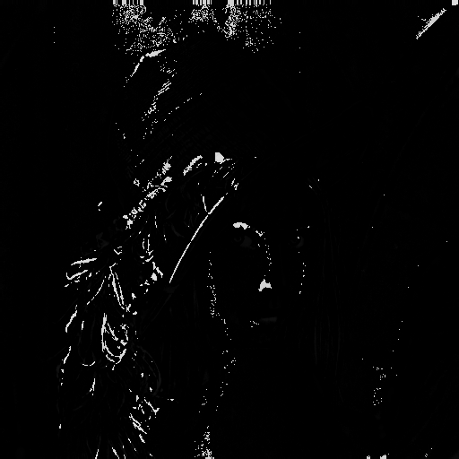
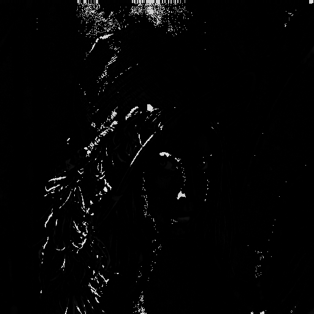
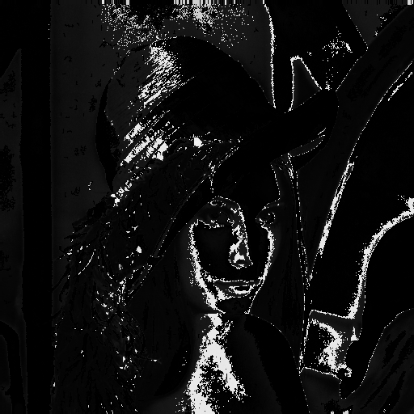
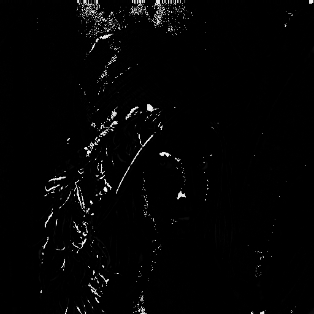
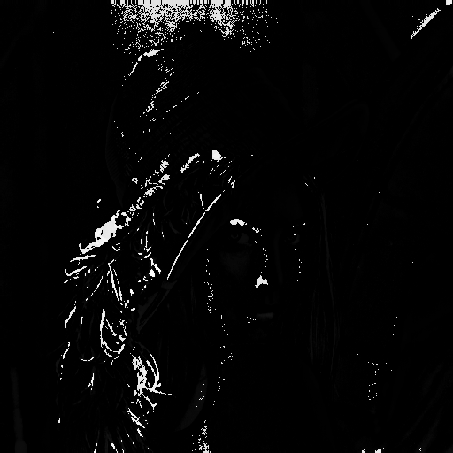
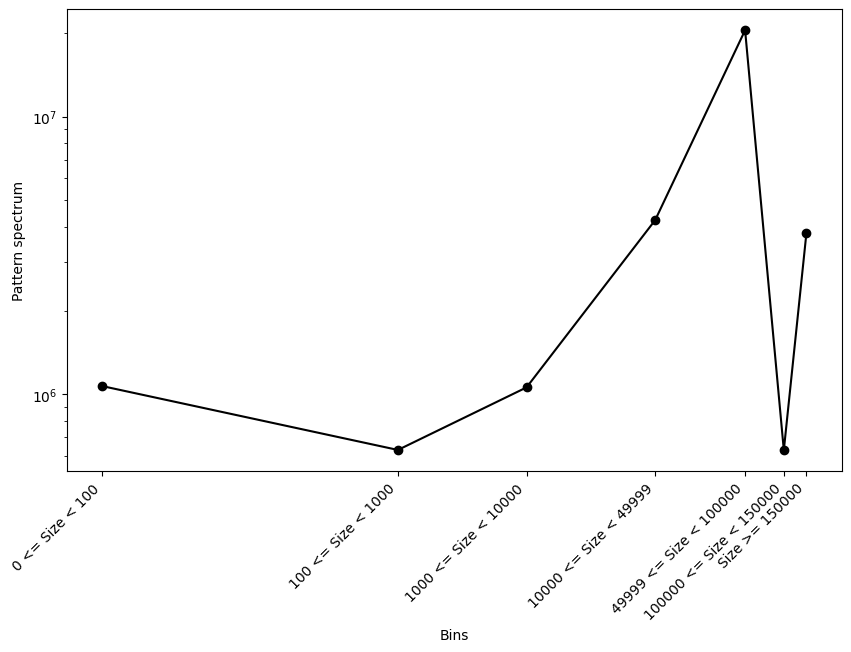
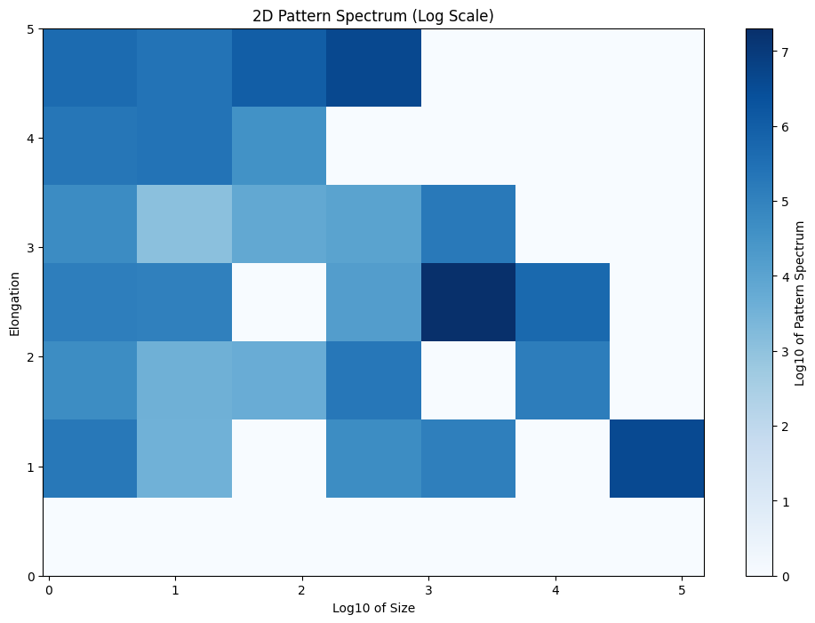
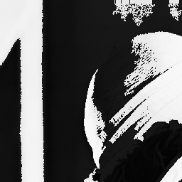
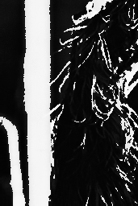
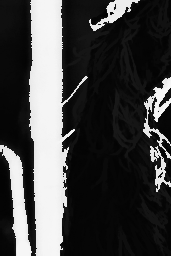

Getting Started with Simple Examples
Here are some working examples to help you understand how to use disccofan for your projects. We will use the well-known Lena grayscale image, renamed as input_image.png in disccofan’s main folder. The grayscale values range from 3 to 255. Note that we use a 2D image for simplicity, but any 2D or 3D data can be used.
Filtering Structures Based on Their Morphological Properties
Using the Structures’ Sizes
The simplest operation is filtering based on the size of the structures. For this, you can use default settings. Create a config file named config_filtering.ini with the following options:
input_name = "input_image.png" output_name = "output_image.png" operation = ( ("filter", 0, 150), );
disccofan will read the image input_image.png and apply a top-hat filter to remove all bright structures smaller than 150 pixels. The result will be saved as output_image_filter_area_150.000.png. Note that the final output name includes the operation type and parameters. To run the code without parallelization:
./disccofan -config config_filtering.ini
|
The original `input_image.png`. |
The result of the filtering operation. |
By default, disccofan filters the brightest structures. To filter the darkest structures instead, set the tree_type to min in the config file. You can also change this from the command line:
./disccofan -config config_filtering.ini -tree_type min
This will result in removing the darkest structures smaller than 150 pixels:
|
The original `input_image.png`. |
The result of the filtering operation with dark structures removed. |
Remember to use a different filename for the output when changing the tree_type option to avoid overwriting the previous results.
Using the Structures’ Elongation
Instead of size, you can filter based on elongation or other attributes. For example, to keep only the most elongated structures, you can use the X-extent or Elongation attribute functions. Update config_filtering.ini with the following parameters:
input_name = "input_image.png" output_name = "output_image.png" operation = ( ("filter", 3, 100), # X-extent ("filter", 14, 10), # Elongation );
The first operation removes structures with an x-axis extent smaller than 100 pixels. The second operation removes structures with elongation less than 10. Elongation is computed through the inertia matrix, making this operation rotation-invariant, unlike the X-extent which is axis-dependent. Run the code as before:
./disccofan -config config_filtering.ini
Here are the resulting images:
|
The original `input_image.png`. |
The result of filtering using the X-extent attribute. |
The result of filtering using the Elongation attribute. |
To understand how each attribute works and how to adjust thresholds for your application, you can experiment with different attributes and threshold values.
Extracting Structures Based on Their Morphological Properties
Instead of removing structures, you can extract them. This operation is similar to filtering but instead shows the structures that do not meet the specified criteria. The result is the difference between the original image and the filtered image.
Create a config file named config_extracting.ini with the following options:
input_name = "input_image.png" output_name = "output_image.png" operation = ( ("extract", 0, 150), );
Run the code with:
./disccofan -config config_extracting.ini
The output image will be named output_image_extract_area_150.000.png and will display only the bright structures that are 150 pixels or less.
|
The original `input_image.png`. |

The result of the extracting operation. |
Similarly, you can explore other attribute functions. Update config_extracting.ini with the following parameters:
input_name = "input_image.png" output_name = "output_image.png" operation = ( ("extract", 2, 50), # Diagonal of enclosing rectangle ("extract", 16, 5), # Sparseness ("extract", 17, 0.2), # Non-compactness );
|
The original `input_image.png`. |

The result of extracting based on the diagonal of the enclosing rectangle attribute. |
|
The result of extracting based on the sparseness attribute. |

The result of extracting based on the non-compactness attribute. |
Creating a DMP
The Differential Morphological Profile (DMP) operation is useful for observing image content at different scales. We will use attribute function 0, which returns the size of the structures. First, create a file named lvec.txt with a list of characteristic scales that might be interesting for the image. For a 512 by 512 pixel image, you can use scales ranging from 1 to 262144. Here is an example lvec.txt file:
#LambdaVector file. Keep this exact line in all similar lambda vector files 100 1000 10000 50000 100000 150000
Ensure the txt file starts with the line #LambdaVector file. Keep this exact line in all similar lambda vector files, as this tells disccofan that the file is valid for processing.
Create a config_dmp.ini with the following options:
input_name = "input_image.png" output_name = "output_image.png" operation = ( ("dmp", 0, "lvec.txt"), );
Make sure the path to lvec.txt is correct. If it’s in the same folder as disccofan, you can use the relative path.
Run the code with:
./disccofan -config config_dmp.ini
The output will be a FITS file named output_image_dmp_max_area.fits, as the DMP operation always adds one more dimension compared to the input image. This file contains multiple slices representing the differential morphological profile for the specified scales.
Open the FITS file with an imaging software or Python to view the slices. Each slice corresponds to a scale from the lvec.txt file:
|

First slice of the DMP (scale = 100). |

Second slice of the DMP (scale = 1000). |
Third slice of the DMP (scale = 10000). |
|
Fourth slice of the DMP (scale = 50000). |
Fifth slice of the DMP (scale = 100000). |
Sixth slice of the DMP (scale = 150000). |
As with filtering operations, the dmp operation can be used with any attribute function.
Exploring the 1D Pattern Spectrum
The 1D pattern spectrum is another approach to exploring the amount of information at different scales. It uses similar parameters to the dmp operation and requires a lvec.txt file (which can have a different name) containing the characteristic scales of interest. You can use a similar lvec.txt file as before:
#LambdaVector file. Keep this exact line in all similar lambda vector files 100 1000 10000 50000 100000 150000
Create a configuration file named config_pattern1d.ini with the following options:
input_name = "input_image.png" output_name = "output_image.png" operation = ( ("pattern", 0, "lvec.txt", 1), );
The 1 at the end is a scale factor used to multiply all the scales in the lvec.txt file. While it might seem unnecessary, this factor is a practical way to explore different characteristic scales by simply adjusting the scales in the file.
Run the code with:
./disccofan -config config_pattern1d.ini
The output will be a text file named output_image_PS_1D_area.txt. This file contains two columns: one for the bins (or lambdas) and the second for the actual pattern spectrum. Each value in the pattern spectrum represents the amount of information contained between the bin and the next bin. Note that the first bin might show a value of 0, even if this value wasn’t in the lvec.txt file. This is done for practicality to include information between 0 and the first scale noted in the lvec.txt file.
To visualize the pattern spectrum, you can use Python, R, or any other tool for plotting. Here’s a sample Python script to create a histogram of the pattern spectrum:
import pandas as pd import numpy as np import matplotlib.pyplot as plt # Read the data pat = pd.read_csv('output_image_PS_1D_area.txt', delim_whitespace=True) # Extract lambdas and spectrum values lambdas = pat['lambdas'].values spectra = pat['spectra'].values # Print values for verification print("Lambdas:", lambdas) print("Spectra:", spectra) # Adjust lambdas to avoid inf values during log10 transformation lambdas[0] += 0.5 lambdas = np.log10(lambdas) # Plotting plt.figure(figsize=(10, 6)) plt.plot(lambdas, spectra, color='k', marker='o') plt.xlabel('Bins') plt.ylabel('Pattern Spectrum') plt.yscale('log') plt.xticks(lambdas) ax = plt.gca() xtick_labels = [ '%d <= Size < %d' % (10**lambdas[i], 10**lambdas[i+1]) for i in range(len(lambdas)-1) ] + ['Size >= %d' % 10**lambdas[-1]] ax.set_xticklabels(xtick_labels, rotation=45, ha='right') # Show plot plt.show()
This script will generate a plot similar to the one below:
|

The resulting 1D pattern spectrum. |
If everything is correct, the sum of all the bins in the pattern spectrum should correspond to the sum of the pixel gray values in the image.
Exploring the 2D Pattern Spectrum
The 2D pattern spectrum extends the 1D pattern spectrum to include a second attribute function. In this example, we will compute a 2D pattern spectrum using the size and elongation of the structures in the image. The process is similar to the 1D pattern spectrum, with the addition of a second attribute function.
First, create a list of scales for the size attribute using a lvec.txt file, similar to the one used previously:
#LambdaVector file. Keep this exact line in all similar lambda vector files 100 1000 10000 50000 100000 150000
Next, create a file for the second attribute function (elongation), named lvec_attr2.txt, with the following values:
#LambdaVector file. Keep this exact line in all similar lambda vector files 1 1.5 2 2.5 3 5
Create a configuration file named config_pattern2d.ini with the following options:
input_name = "input_image.png" output_name = "output_image.png" operation = ( ("pattern2D", 14, "lvec_attr2.txt", 1, 0, "lvec.txt", 1), );
It’s important to note that the attribute function with the highest index (in this case, 14 for elongation) should be listed first. Additionally, the 2D pattern spectrum only works with attributes belonging to the same group, except for attribute function 0, which can be combined with any other attribute functions if it appears second in the config file.
Run the code with:
./disccofan -config config_pattern2d.ini
The output file will be named output_image_PS_2D_elong_area.txt. This file contains three columns: the bins for each attribute function in the first two columns, and the 2D pattern spectrum in the third column. To visualize the result, you can use Python as follows:
import pandas as pd import numpy as np import matplotlib.pyplot as plt # Load the data data = pd.read_csv('output_image_PS_2D_elong_area.txt', delim_whitespace=True) # Extract values for plotting lambda_attr1 = data['lambdas_attr1'].values lambda_attr2 = data['lambda_attr2'].values spectra = data['spectra'].values # Unique values for axes lambda1_unique = np.unique(lambda_attr1) lambda2_unique = np.unique(lambda_attr2) # Create a 2D array for the pattern spectrum pattern_spectrum = np.zeros((len(lambda1_unique), len(lambda2_unique))) # Fill the pattern spectrum array for i in range(len(lambda_attr1)): x = np.where(lambda1_unique == lambda_attr1[i])[0][0] y = np.where(lambda2_unique == lambda_attr2[i])[0][0] pattern_spectrum[x, y] = spectra[i] # Apply log10 scale to x-axis (lambda_attr2) and spectrum values pattern_spectrum = np.log10(pattern_spectrum + 1e-10) # Adding a small value to avoid log(0) lambda2_unique_log = np.log10(lambda2_unique + 1e-1) # Plotting the heatmap plt.figure(figsize=(12, 8)) plt.imshow(pattern_spectrum, aspect='auto', cmap='Blues', extent=[lambda2_unique_log.min(), lambda2_unique_log.max(), lambda1_unique.max(), lambda1_unique.min()], vmin=0) plt.colorbar(label='Log10 of Pattern Spectrum') plt.xlabel('Log10 of Size') plt.ylabel('Elongation') plt.title('2D Pattern Spectrum (Log Scale)') plt.gca().invert_yaxis() # Ensure origin is at the bottom-left plt.show()
The resulting 2D pattern spectrum will look like this:
|

The resulting 2D pattern spectrum. |
Speeding Up the Code
Using Threads
disccofan utilizes OpenMP for multi-threading to accelerate processing. This method is described in the paper: Concurrent Computation of Attribute Filters on Shared Memory Parallel Machines (<https://ieeexplore.ieee.org/document/4407727>). To enable multi-threading, simply specify the number of threads in the config.ini file:
input_name = "input_image.png" output_name = "output_image.png" operation = ( ("filter", 0, 150), ); threads = 4;
Alternatively, you can activate threading via the command line:
./disccofan -threads 4
For the image input_image.png, using four threads should ideally reduce processing time by a factor of four. However, this linear speed-up is generally observed for images up to 16 bits per pixel. The parallelization scheme may not perform as well for images with higher dynamic ranges. For floating point or 32-bit per pixel values, multi-threading is not recommended unless the data is relatively simple and free of noise.
Using MPI with a Single Input Data Set
disccofan also supports advanced parallelization using OpenMPI, which is more versatile than multi-threading. For a single input file, MPI can split the image into several parts, both horizontally and vertically (and in depth for 3D data). This is controlled via the mpi_grid option in the config.ini file:
input_name = "input_image.png" output_name = "output_image.png" operation = ( ("filter", 0, 150), ); mpi_grid = [2,2,1];
In this configuration, the image is divided into 4 parts within a 2x2 grid. To fully utilize this grid, you need to run four MPI processes:
mpiexec -n 4 ./disccofan
Alternatively, you can use the -grid option directly:
mpiexec -n 4 ./disccofan -grid [2,2,1]
Each process handles a separate image segment, but the output is typically saved as a single file in formats like FITS or HDF5, as Freeimage does not support simultaneous writes from multiple processes.
To write the final result as individual images from each process, update the config.ini file as follows:
input_name = "input_image.png" output_name = "output_image-T0T.png" operation = ( ("filter", 0, 150), ); mpi_grid = [2,2,1];
This configuration results in separate files for each process (indexed from 0 to 3):
|

The output image from process 2 |
The output image from process 3 |
|
The output image from process 0 |
The output image from process 1 |
MPI parallelization is available for all operations in disccofan, but it should be used very carefully with the tree operation. Although it is functional, the resulting files require special handling compared to single tree files.
Using MPI with a Pre-Cut Data Set
When working with very large images or datasets, it can be more practical to divide the data into smaller segments. These segments can then be stored on individual nodes of a high-performance cluster and processed in parallel.
disccofan supports processing pre-cut data sets, but requires that you have enough MPI processes to handle each segment of the data. Each pre-cut image should be named with a specific format: -T[X]T.[fileformat], where [X] denotes the MPI process number responsible for this segment, and [fileformat] is the format of the image. The ordering of these images is also critical. For instance, if your data is divided into 3 horizontal parts and 2 vertical parts, the images should be named and ordered as follows:
toto-T0T.png is the lower-left part
toto-T1T.png and toto-T2T.png are the other parts in the same row
toto-T3T.png, toto-T4T.png, and toto-T5T.png are the parts in the next row above
The principle remains the same for 3D datasets, where the data is also divided by depth.
For example, I divided input_image.png into 3 horizontal and 2 vertical parts as shown:
|
The input image toto-T3T.png. |
The input image toto-T4T.png. |
The input image toto-T5T.png. |
|

The input image toto-T0T.png. |
The input image toto-T1T.png. |
The input image toto-T2T.png. |
In the config.ini file, you would set it up as follows:
input_name = "toto-T0T.png" output_name = "out_toto-T0T.png" operation = ( ("filter", 0, 150), ); mpi_grid = [3,2,1]; tile_overlap = 0;
The tile_overlap = 0 setting is critical here. disccofan requires individual tiles to have a pixel overlap at the borders with neighboring tiles. When processing a single input file, this overlap is straightforward. However, with pre-cut data, this overlap must be managed through additional inter-process communication to ensure continuity between tiles.
To execute the processing, use:
mpiexec -n 6 ./disccofan
This command launches 6 processes to handle the six tiles, and outputs will be saved separately as files named out_toto-T0T_filter_area_150.000.png, etc.
|
The output image from process 3. |
The output image from process 4. |
The output image from process 5. |
|

The output image from process 0. |
The output image from process 1. |
The output image from process 2. |
It is important to note that processing individual tiles results in the same outcome as processing the entire dataset as a single image or volume. This is due to the principle of Distributed Component Forests, as detailed in the paper: